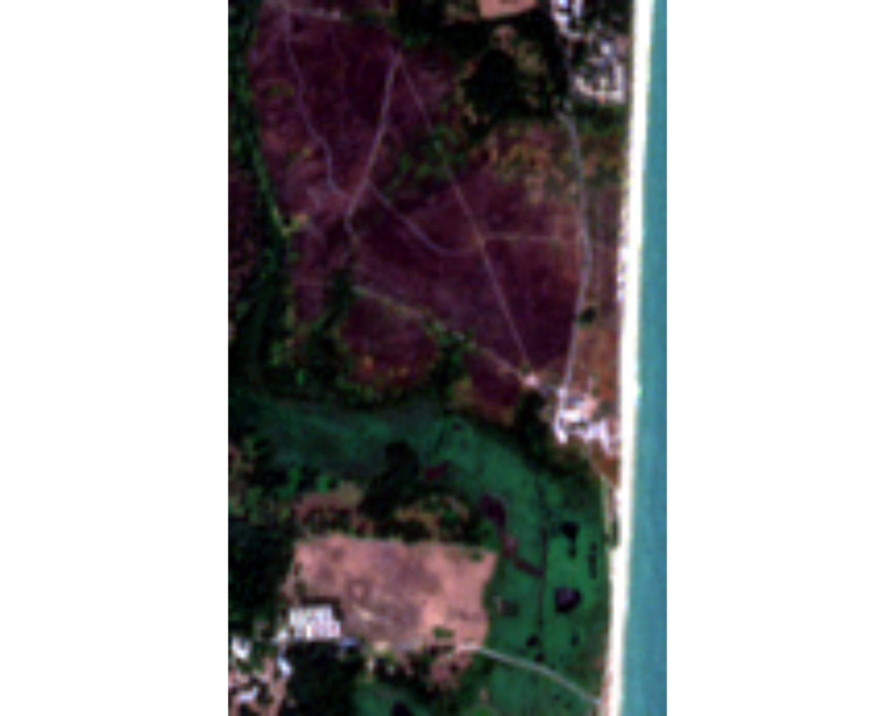
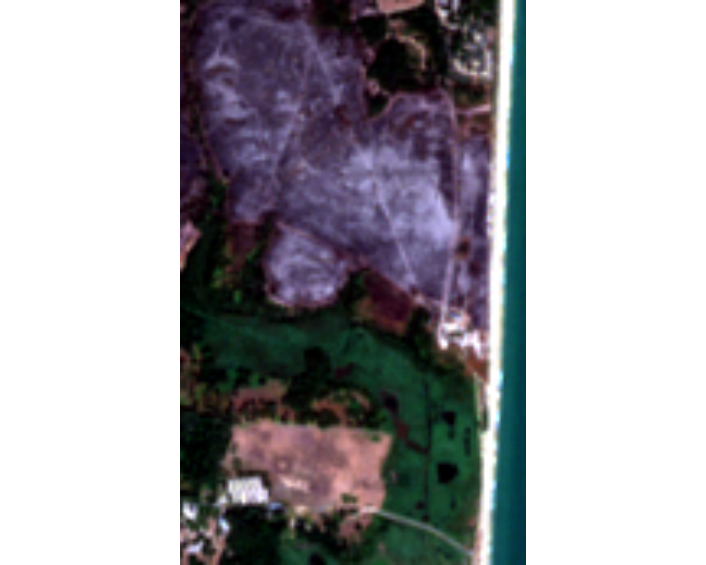
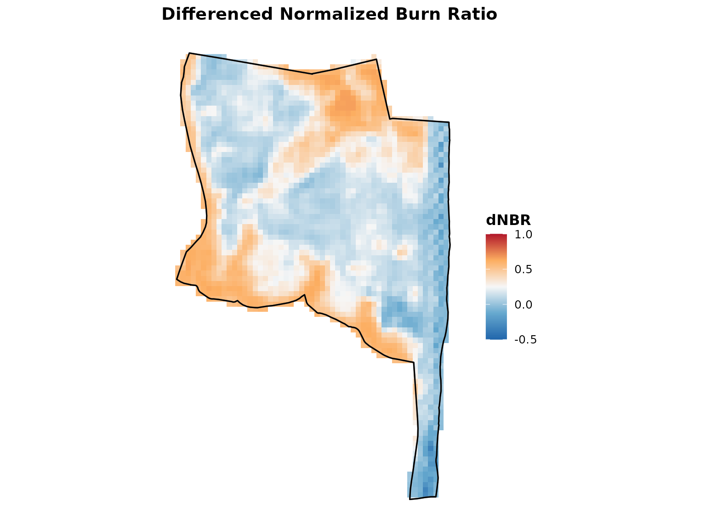
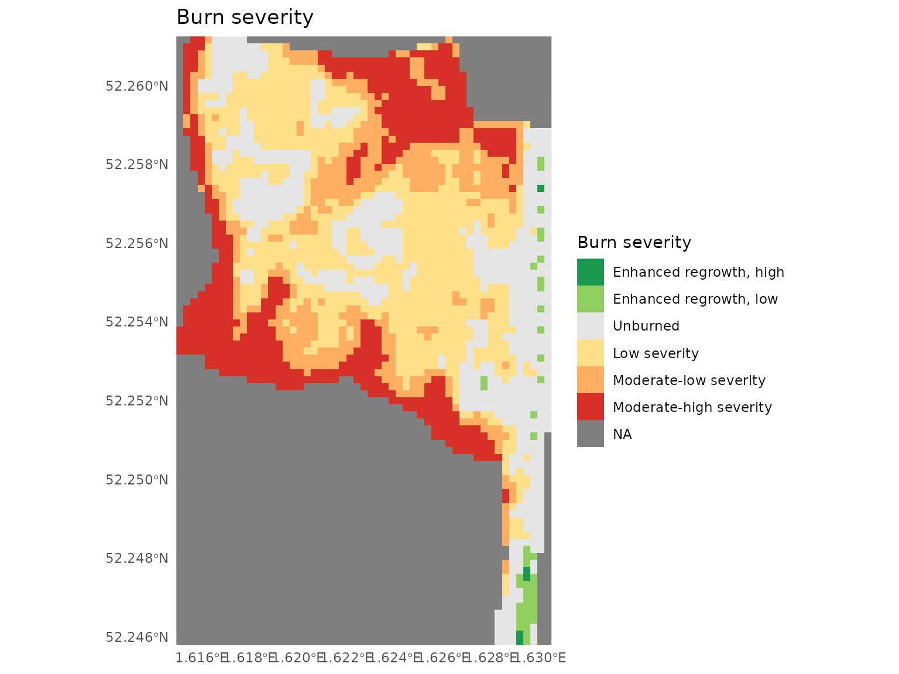
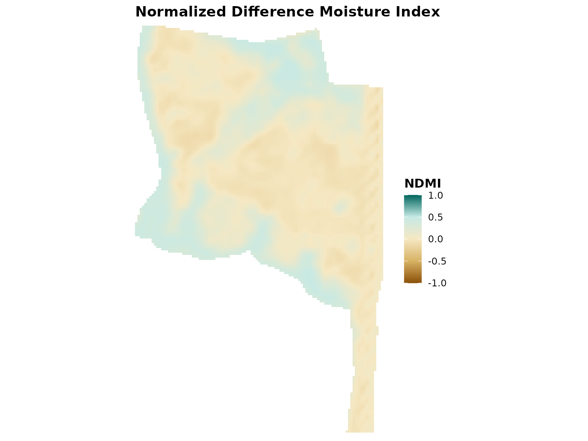
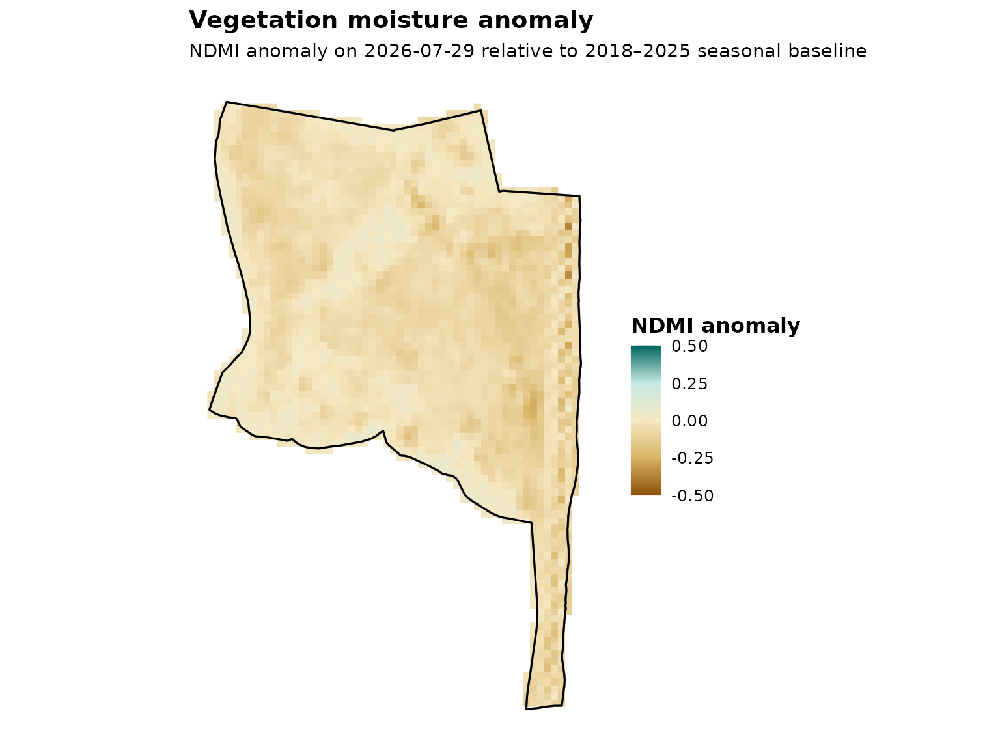
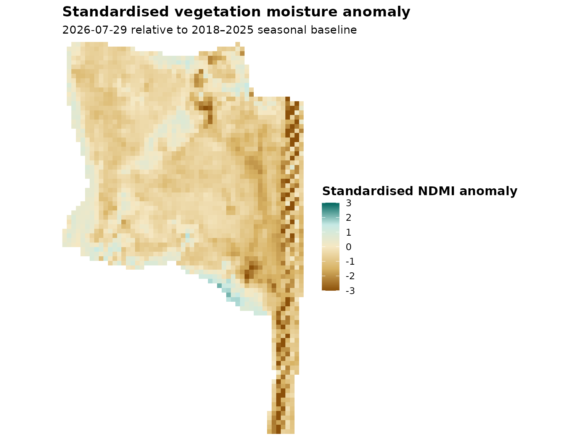
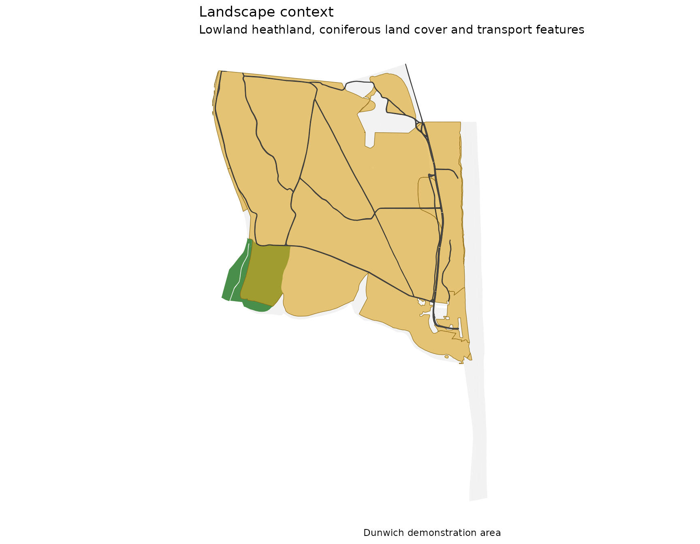

getting-started.RmdsentinelBurnR provides tools for analysing wildfire and
its environmental context using satellite and climate data.
The package uses Sentinel-2 multispectral imagery to identify burned areas and examine vegetation condition. It can also compare vegetation moisture with historical observations and place these observations in the context of climate data such as rainfall.
A typical analysis can include:
This vignette uses data from the Dunwich area of Suffolk, UK, associated with a wildfire in summer 2026. All example data are included with the package, so the vignette can be run without downloading data.
Sentinel-2 records reflected light in several parts of the electromagnetic spectrum. The simplest way to view the imagery is as a true-colour image, combining the red, green and blue wavelengths to produce an image similar to that seen by the human eye.
The following images show the Dunwich area before and after the fire.
pre_visual <- demo_data("visual_pre")
terra::plotRGB(
pre_visual,
r = 1,
g = 2,
b = 3,
stretch = "lin"
)
post_visual <- demo_data("visual_post")
terra::plotRGB(
post_visual,
r = 1,
g = 2,
b = 3,
stretch = "lin"
)
The effects of the fire can be seen in the true-colour imagery, but visible colour alone is not an ideal way to determine the extent or severity of burning. Soil, shadows, vegetation type and naturally bare ground can produce similar changes in appearance.
Sentinel-2 also measures near-infrared and short-wave infrared light, which provide much stronger information about changes in vegetation following fire. These wavelengths are used to calculate the Normalized Burn Ratio (NBR).
Sentinel-2 also measures wavelengths beyond those visible to the human eye. The Normalized Burn Ratio (NBR) uses near-infrared and short-wave infrared measurements, which respond strongly to changes in vegetation and surface condition following fire.
Load the area of interest and the Sentinel-2 collections:
The collections contain cropped Sentinel-2 imagery for the Dunwich
area. In a normal analysis these collections would instead be created
using search_s2() and download_s2().
For example, the corresponding workflow is:
pre_search <- search_s2(
aoi,
start = "2026-07-14",
end = "2026-07-29"
)
post_search <- search_s2(
aoi,
start = "2026-07-29",
end = "2026-08-22"
)
pre <- download_s2(
pre_search,
assets = s2_burn_assets
)
post <- download_s2(
post_search,
assets = s2_burn_assets
)The code is not evaluated in this vignette because searching and downloading Sentinel-2 imagery requires an internet connection.
Burn severity can be estimated from changes in the Normalized Burn Ratio (NBR). NBR contrasts near-infrared and short-wave infrared reflectance. Healthy vegetation generally has high near-infrared reflectance, whereas recently burned surfaces tend to have relatively higher short-wave infrared reflectance.
analyse_burn() calculates pre- and post-fire NBR and
their difference (dNBR):
burn <- analyse_burn(
pre = pre,
post = post,
boundary = aoi
)
#> Building pre-fire composite...
#> Building nir08
#> Building swir22
#> Aligning bands...
#> Stacking composite...
#> Caching composite: /home/runner/.cache/R/sentinelBurnR/composites/composite_880e5f32b9fcc85ecad9a367897b4976.tif
#> Building post-fire composite...
#> Building nir08
#> Building swir22
#> Aligning bands...
#> Stacking composite...
#> Caching composite: /home/runner/.cache/R/sentinelBurnR/composites/composite_082aec378f15512e2a95053f86b76e81.tif
#> Calculating NBR...
#> Calculating dNBR...
#> Detecting burned area...
#> Classifying burn severity...
burn
#> sentinelBurnR burn analysis
#> ---------------------------
#> Burn threshold : 0.27 dNBR
#> Burned area : 118.5 haThe resulting sbr_burn object contains the pre- and
post-fire composites, NBR rasters, dNBR, the detected burned area, burn
severity and processing provenance.
The spatial pattern of dNBR can be displayed with:
plot_index(
burn$dnbr,
index = "dnbr",
boundary = aoi$geometry
)
#> Coordinate system already present.
#> ℹ Adding new coordinate system, which will replace the existing one.
Burn severity can also be mapped directly:
plot_severity(
burn$severity,
boundary = aoi$geometry
)
#> Coordinate system already present.
#> ℹ Adding new coordinate system, which will replace the existing one.
The same pre-fire Sentinel-2 imagery can be used to examine vegetation condition.
analyse_vegetation() calculates three complementary
spectral indices:
vegetation <- analyse_vegetation(
pre
)
#> Building vegetation composite...
#> Building red
#> Building nir08
#> Building swir16
#> Aligning bands...
#> Stacking composite...
#> Caching composite: /home/runner/.cache/R/sentinelBurnR/composites/composite_d27f32b2c1eed399c26c4aa1dc9eab94.tif
#> Calculating NDVI...
#> Calculating NDMI...
#> Calculating MSI...
vegetation
#> $composite
#> class : SpatRaster
#> size : 173, 106, 3 (nrow, ncol, nlyr)
#> resolution : 10, 10 (x, y)
#> extent : 405450, 406510, 5789270, 5791000 (xmin, xmax, ymin, ymax)
#> coord. ref. : WGS 84 / UTM zone 31N (EPSG:32631)
#> source(s) : memory
#> varname : S2B_31UCT_20260729_0_L2A_red
#> names : red, nir08, swir16
#> min values : 150, 330.5625, 321.25
#> max values : 2971.5, 4719.34375, 3360.78125
#>
#> $ndvi
#> class : SpatRaster
#> size : 173, 106, 1 (nrow, ncol, nlyr)
#> resolution : 10, 10 (x, y)
#> extent : 405450, 406510, 5789270, 5791000 (xmin, xmax, ymin, ymax)
#> coord. ref. : WGS 84 / UTM zone 31N (EPSG:32631)
#> source(s) : memory
#> varname : S2B_31UCT_20260729_0_L2A_red
#> name : ndvi
#> min value : -0.324658
#> max value : 0.914947
#>
#> $ndmi
#> class : SpatRaster
#> size : 173, 106, 1 (nrow, ncol, nlyr)
#> resolution : 10, 10 (x, y)
#> extent : 405450, 406510, 5789270, 5791000 (xmin, xmax, ymin, ymax)
#> coord. ref. : WGS 84 / UTM zone 31N (EPSG:32631)
#> source(s) : memory
#> varname : S2B_31UCT_20260729_0_L2A_red
#> name : ndmi
#> min value : -0.142421
#> max value : 0.48973
#>
#> $msi
#> class : SpatRaster
#> size : 173, 106, 1 (nrow, ncol, nlyr)
#> resolution : 10, 10 (x, y)
#> extent : 405450, 406510, 5789270, 5791000 (xmin, xmax, ymin, ymax)
#> coord. ref. : WGS 84 / UTM zone 31N (EPSG:32631)
#> source(s) : memory
#> varname : S2B_31UCT_20260729_0_L2A_red
#> name : msi
#> min value : 0.342525
#> max value : 1.332146
#>
#> $assets
#> [1] "red" "nir08" "swir16"
#>
#> $provenance
#> $provenance$collection
#> $provenance$collection$summary
#> $provenance$collection$summary$start
#> [1] "2026-07-14"
#>
#> $provenance$collection$summary$end
#> [1] "2026-07-29"
#>
#> $provenance$collection$summary$n_acquisitions
#> [1] 9
#>
#> $provenance$collection$summary$satellites
#> [1] "sentinel-2a" "sentinel-2b" "sentinel-2c"
#>
#> $provenance$collection$summary$mean_cloud
#> [1] 54.66376
#>
#> $provenance$collection$summary$max_cloud
#> [1] 91.25531
#>
#>
#> $provenance$collection$scenes
#> acquisition date satellite cloud_cover cloud_shadow
#> 1 S2B_31UCT_20260729_0_L2A 2026-07-29 sentinel-2b 0.020469 0.001558
#> 2 S2B_31UDT_20260729_0_L2A 2026-07-29 sentinel-2b 0.013266 0.000000
#> 3 S2B_31UCU_20260729_0_L2A 2026-07-29 sentinel-2b 0.296559 0.032196
#> 4 S2B_31UDU_20260729_0_L2A 2026-07-29 sentinel-2b 0.146638 0.000000
#> 5 S2A_31UCT_20260726_1_L2A 2026-07-26 sentinel-2a 57.806909 5.944328
#> 6 S2A_31UDT_20260726_1_L2A 2026-07-26 sentinel-2a 49.149847 6.212101
#> 7 S2A_31UCU_20260726_1_L2A 2026-07-26 sentinel-2a 63.898134 6.752651
#> 8 S2A_31UDU_20260726_1_L2A 2026-07-26 sentinel-2a 44.819829 1.586617
#> 9 S2B_31UCT_20260726_0_L2A 2026-07-26 sentinel-2b 59.447420 4.462055
#> 10 S2B_31UDT_20260726_0_L2A 2026-07-26 sentinel-2b 85.793304 0.585137
#> 11 S2B_31UCU_20260726_0_L2A 2026-07-26 sentinel-2b 58.542842 6.156673
#> 12 S2B_31UDU_20260726_0_L2A 2026-07-26 sentinel-2b 60.375458 0.388108
#> 13 S2C_31UCT_20260724_0_L2A 2026-07-24 sentinel-2c 93.496507 0.067226
#> 14 S2C_31UDT_20260724_0_L2A 2026-07-24 sentinel-2c 99.997443 0.002480
#> 15 S2C_31UCU_20260724_0_L2A 2026-07-24 sentinel-2c 85.245407 0.368619
#> 16 S2C_31UDU_20260724_0_L2A 2026-07-24 sentinel-2c 86.281878 1.422731
#> 17 S2C_31UCT_20260721_0_L2A 2026-07-21 sentinel-2c 92.977858 0.270971
#> 18 S2C_31UDT_20260721_0_L2A 2026-07-21 sentinel-2c 80.271119 0.000000
#> 19 S2C_31UCU_20260721_0_L2A 2026-07-21 sentinel-2c 96.034640 0.316426
#> 20 S2C_31UDU_20260721_0_L2A 2026-07-21 sentinel-2c 86.710948 0.028802
#> 21 S2B_31UCT_20260719_0_L2A 2026-07-19 sentinel-2b 92.181081 0.288699
#> 22 S2B_31UDT_20260719_0_L2A 2026-07-19 sentinel-2b 94.294757 0.441914
#> 23 S2B_31UCU_20260719_0_L2A 2026-07-19 sentinel-2b 87.668514 1.529551
#> 24 S2B_31UDU_20260719_0_L2A 2026-07-19 sentinel-2b 41.086638 2.434609
#> 25 S2A_31UCT_20260716_1_L2A 2026-07-16 sentinel-2a 11.283074 1.741456
#> 26 S2A_31UDT_20260716_1_L2A 2026-07-16 sentinel-2a 64.281458 1.111696
#> 27 S2A_31UCU_20260716_1_L2A 2026-07-16 sentinel-2a 53.769338 0.053988
#> 28 S2A_31UDU_20260716_1_L2A 2026-07-16 sentinel-2a 58.974522 0.219789
#> 29 S2B_31UCT_20260716_0_L2A 2026-07-16 sentinel-2b 12.013546 1.331907
#> 30 S2B_31UDT_20260716_0_L2A 2026-07-16 sentinel-2b 53.367269 0.186141
#> 31 S2B_31UCU_20260716_0_L2A 2026-07-16 sentinel-2b 56.026661 0.047424
#> 32 S2B_31UDU_20260716_0_L2A 2026-07-16 sentinel-2b 62.731332 0.098978
#> 33 S2C_31UCT_20260714_0_L2A 2026-07-14 sentinel-2c 21.092790 3.407308
#> 34 S2C_31UDT_20260714_0_L2A 2026-07-14 sentinel-2c 2.893100 0.591929
#> 35 S2C_31UCU_20260714_0_L2A 2026-07-14 sentinel-2c 47.778782 2.766099
#> 36 S2C_31UDU_20260714_0_L2A 2026-07-14 sentinel-2c 7.125969 1.367231
#> medium_cloud high_cloud vegetation water
#> 1 0.010879 0.003847 26.385432 25.363782
#> 2 0.012973 0.000000 17.418432 69.230020
#> 3 0.045482 0.017396 32.294354 28.489918
#> 4 0.006485 0.000042 10.688163 80.414653
#> 5 16.620876 39.658967 8.979121 9.355063
#> 6 10.678989 35.723552 9.470054 26.974240
#> 7 14.327103 48.620832 8.944158 6.949569
#> 8 12.793224 26.749340 5.850336 42.055705
#> 9 15.230985 42.026439 8.328012 10.792446
#> 10 12.977910 71.425444 0.217813 13.311632
#> 11 14.967820 41.762701 10.491603 8.763479
#> 12 15.935110 34.708661 1.600147 35.907680
#> 13 34.826180 9.598876 1.932757 0.609031
#> 14 51.267093 19.106279 0.000000 0.000077
#> 15 14.464720 4.414269 2.104641 9.177823
#> 16 13.598995 24.533899 0.122713 12.106331
#> 17 2.002415 90.591615 0.000013 6.721082
#> 18 11.201393 68.520612 0.000000 19.728799
#> 19 6.783435 89.242190 0.000313 3.622164
#> 20 15.739433 70.248669 0.000000 13.260245
#> 21 15.533684 67.825770 1.078279 3.822456
#> 22 7.463553 86.608386 0.000000 5.262013
#> 23 16.475289 68.887717 0.696217 9.082729
#> 24 13.598707 23.410174 1.735700 53.139818
#> 25 2.986585 1.241808 25.987160 23.569296
#> 26 34.914330 12.174066 3.749198 27.970502
#> 27 9.181809 22.395857 19.819400 6.370837
#> 28 25.229946 21.274963 4.870258 31.812406
#> 29 3.376937 1.161595 22.994469 28.827208
#> 30 26.956859 9.300235 0.115720 46.256578
#> 31 9.582403 24.486841 18.546295 5.604890
#> 32 27.489486 14.771165 1.120577 34.993145
#> 33 8.516841 12.572250 22.260556 21.936375
#> 34 1.753080 1.140019 19.594200 65.656966
#> 35 10.051285 37.726849 16.589238 15.624268
#> 36 5.013417 2.111362 7.277124 78.533292
#>
#> $provenance$collection$acquisitions
#> date satellite cloud_cover acquisition
#> 7 2026-07-14 sentinel-2c 19.722660 sentinel-2c_2026-07-14
#> 1 2026-07-16 sentinel-2a 47.077098 sentinel-2a_2026-07-16
#> 3 2026-07-16 sentinel-2b 46.034702 sentinel-2b_2026-07-16
#> 4 2026-07-19 sentinel-2b 78.807748 sentinel-2b_2026-07-19
#> 8 2026-07-21 sentinel-2c 88.998641 sentinel-2c_2026-07-21
#> 9 2026-07-24 sentinel-2c 91.255309 sentinel-2c_2026-07-24
#> 2 2026-07-26 sentinel-2a 53.918680 sentinel-2a_2026-07-26
#> 5 2026-07-26 sentinel-2b 66.039756 sentinel-2b_2026-07-26
#> 6 2026-07-29 sentinel-2b 0.119233 sentinel-2b_2026-07-29
#>
#>
#> $provenance$processing
#> $provenance$processing$assets
#> [1] "red" "nir08" "swir16"
#>
#> $provenance$processing$created
#> [1] "2026-09-11 07:17:31 UTC"
#>
#> $provenance$processing$package_version
#> [1] "0.0.1"
#>
#> $provenance$processing$indices
#> [1] "NDVI" "NDMI" "MSI"
#>
#>
#>
#> attr(,"class")
#> [1] "sbr_vegetation"For example, pre-fire vegetation moisture can be mapped using NDMI:
plot_index(
vegetation$ndmi,
index = "ndmi"
)
These indices describe vegetation condition at the time of observation. A low NDMI value alone does not demonstrate drought: vegetation moisture varies naturally between vegetation types and through the growing season. To assess whether conditions were unusually dry, the current observation can instead be compared with observations from previous years.
Vegetation moisture at a single point in time is difficult to interpret in isolation. NDMI varies between vegetation types and also changes seasonally.
To provide historical context, sentinelBurnR can compare
current NDMI with observations from the same part of the growing season
in previous years.
For this example, the package includes annual NDMI composites for 2018–2025 and a pre-fire observation from 29 July 2026.
The historical data contain one seasonal NDMI composite for each year:
names(historical_ndmi)
#> [1] "2018" "2019" "2020" "2021" "2022" "2023" "2024" "2025"For the demonstration we can analyse these already-prepared rasters:
drought <- sentinelBurnR:::analyse_drought_rasters(
annual = historical_ndmi,
current = current_ndmi[["2026-07-29"]],
current_date = "2026-07-29"
)
drought
#> <sbr_drought>
#> Current date: 2026-07-29
#> Baseline: 2018-2025 (8 years)
#> Seasonal window: °C30 days
#> Valid coverage: 100.0%
#> Median anomaly: -0.050
#> Pixels below -2SD: 5.1%The anomaly is calculated as the difference between current NDMI and the historical seasonal baseline. Negative values therefore indicate vegetation that was less moisture-rich than expected for the time of year.
For the Dunwich example, median NDMI on 29 July 2026 was approximately 0.05 below the 2018–2025 seasonal baseline. This indicates relatively dry vegetation conditions before the fire, although the anomaly should not by itself be interpreted as a direct measure of drought severity.
plot_drought(
drought,
index = "anomaly",
boundary = aoi$geometry
)
#> Coordinate system already present.
#> ℹ Adding new coordinate system, which will replace the existing one.
A standardised anomaly is also available:
plot_drought(
drought,
index = "standardised",
boundary = aoi$geometry
)
#> Coordinate system already present.
#> ℹ Adding new coordinate system, which will replace the existing one.
The standardised anomaly expresses the departure relative to
historical interannual variability. Where historical variability is very
small, standardisation can become unstable, so
sentinelBurnR masks pixels whose historical standard
deviation falls below a minimum threshold. Absolute NDMI anomaly
therefore remains an important part of the interpretation.
The Sentinel-2 moisture anomaly indicates whether vegetation was unusually dry compared with previous years. It does not, by itself, tell us why the vegetation was dry.
Meteorological data provide an independent line of evidence. Here we compare rainfall before the fire with the same period during the 1991–2020 climate baseline.
The demonstration data contain daily ERA5 rainfall extracted for the Dunwich area.
rainfall <- demo_data("rainfall")
climate <- sentinelBurnR::analyse_climate(
rainfall = rainfall,
date = as.Date("2026-07-29"),
baseline_years = 1991:2020,
windows = c(30, 60, 90)
)
rainfall_table <- climate$summary |>
dplyr::transmute(
`Period (days)` = window_days,
`2026 rainfall (mm)` = current_mm,
`1991–2020 median (mm)` = baseline_median_mm,
`Deficit (mm)` = anomaly_mm,
`% of historical median` = percent_of_normal,
`Historical percentile` = historical_percentile
)
knitr::kable(
rainfall_table,
digits = 1,
caption = paste(
"Rainfall before 29 July 2026 compared with",
"the equivalent periods in the 1991–2020 baseline."
)
)| Period (days) | 2026 rainfall (mm) | 1991–2020 median (mm) | Deficit (mm) | % of historical median | Historical percentile |
|---|---|---|---|---|---|
| 30 | 6.8 | 62.3 | -55.5 | 11.0 | 0.0 |
| 60 | 68.4 | 123.4 | -54.9 | 55.5 | 20.0 |
| 90 | 94.3 | 172.8 | -78.5 | 54.6 | 3.3 |
The historical percentile ranks the 2026 rainfall total against the 30 equivalent periods in the 1991–2020 baseline. For example, the 90-day rainfall total was at approximately the 3rd percentile. The 30-day value was lower than all 30 baseline values and therefore has an empirical percentile of 0%. This should be interpreted as a ranking within the 30-year sample, rather than as a literal estimate of a zero-percent climatological probability.
Rainfall was substantially below the historical median during the period leading up to the fire. In the 30 days ending 29 July 2026, only about 6.8 mm of rain fell, compared with a 1991–2020 median of about 62.3 mm – approximately 11% of the historical median.
The rainfall deficit was also apparent over longer periods. About 68.4 mm fell during the preceding 60 days and 94.3 mm during the preceding 90 days, compared with historical medians of approximately 123.4 and 172.8 mm respectively.
This provides independent meteorological evidence that the negative vegetation moisture anomaly seen by Sentinel-2 occurred during an unusually dry period.
Total rainfall does not tell us how rain was distributed through time. A similar total could result from frequent small showers or from a long period with almost no rain.
climate$dry_spell
#> window_days threshold_mm max_consecutive_dry_days days_since_rain dry_days
#> 1 90 1 32 3 68
#> dry_spell_start dry_spell_end
#> 1 2026-06-24 2026-07-25Using less than 1 mm of rainfall per day to define a dry day, 68 of the 90 days before 29 July were dry.
The longest continuous dry spell lasted 32 days, from 24 June to 25 July. Only three days had elapsed since the most recent day with at least 1 mm of rainfall.
We can also compare the duration of this dry spell with the equivalent 90-day period during the 1991–2020 baseline.
climate$dry_spell_baseline[c(
"median_days",
"max_days",
"percentile"
)]
#> $median_days
#> [1] 13.5
#>
#> $max_days
#> [1] 36
#>
#> $percentile
#> [1] 96.66667The median longest dry spell during the 1991–2020 baseline was 13.5 days. The 32-day spell in 2026 was therefore more than twice the historical median.
Only one of the 30 baseline years had a longer dry spell: 2018, when the longest spell lasted 36 days. The 2026 value has an empirical percentile of approximately 96.7%, meaning that it was longer than the corresponding dry spell in 29 of the 30 baseline years.
Taken together, the rainfall and satellite observations provide two independent lines of evidence of unusually dry conditions before the fire. Rainfall was substantially below the historical median and a prolonged dry spell had occurred, while Sentinel-2 showed a negative vegetation moisture anomaly across much of the area.
These observations describe the environmental conditions preceding the fire. They do not establish its cause or, by themselves, quantify wildfire risk.
Wildfire behaviour is influenced not only by vegetation condition and recent weather, but also by the spatial arrangement of fuels and other landscape features. Interfaces between vegetation types can be particularly important, as can roads, tracks and other features that may affect access, suppression and fuel continuity.
analyse_landscape() provides tools for describing these
relationships. It does not calculate a wildfire risk score; instead, it
reports measurable landscape characteristics that can be interpreted
alongside vegetation, drought and climate information.
landcover <- demo_data("landcover")
habitat <- demo_data("habitat")
transport <- demo_data("transport")For the Dunwich example, we examine the interface between lowland heathland and coniferous land cover. Priority habitat polygons provide the heathland mapping, while coniferous cover is identified from OS land-cover classes.
heath <- habitat |>
dplyr::filter(
stringr::str_detect(
mainhabs,
"Lowland heathland"
)
)
conifer <- landcover |>
dplyr::filter(
purrr::map_lgl(
oslandcovertierb,
\(x) any(
x %in% c(
"Coniferous Trees",
"Scattered Coniferous Trees"
)
)
)
)
landscape <- sentinelBurnR::analyse_landscape(
landcover = landcover,
category = "lcb",
habitat = habitat,
transport = transport,
interfaces = list(
heath_conifer = list(
source = heath,
target = conifer,
source_label = "Lowland heathland",
target_label = "Coniferous land cover"
)
),
distances = c(0, 10, 25, 50, 100)
)
landscape
#> <sbr_landscape>
#> Land-cover classes: 22
#> Transport classes: 2
#>
#> Source boundary near target:
#> 1
#>
#> Target area by distance from source:
#> # A tibble: 5 × 6
#> interface source target distance_m length_m length_km
#> <chr> <chr> <chr> <dbl> <dbl> <dbl>
#> 1 heath_conifer Lowland heathland Coniferous land… 0 625. 0.625
#> 2 heath_conifer Lowland heathland Coniferous land… 10 931. 0.931
#> 3 heath_conifer Lowland heathland Coniferous land… 25 1010. 1.01
#> 4 heath_conifer Lowland heathland Coniferous land… 50 1116. 1.12
#> 5 heath_conifer Lowland heathland Coniferous land… 100 1321. 1.32
#>
#> Transport coinciding with source boundary near target:
#> # A tibble: 4 × 6
#> interface source target lower_m upper_m area_ha
#> <chr> <chr> <chr> <dbl> <dbl> <dbl>
#> 1 heath_conifer Lowland heathland Coniferous land cover 0 10 3.67
#> 2 heath_conifer Lowland heathland Coniferous land cover 10 25 0.477
#> 3 heath_conifer Lowland heathland Coniferous land cover 25 50 0.512
#> 4 heath_conifer Lowland heathland Coniferous land cover 50 100 0.250
#>
#> Transport at interface:
#> # A tibble: 10 × 7
#> interface source target category distance_m length_m length_km
#> <chr> <chr> <chr> <chr> <dbl> <dbl> <dbl>
#> 1 heath_conifer Lowland heathland Conif… Track 0 0 0
#> 2 heath_conifer Lowland heathland Conif… Road 0 0 0
#> 3 heath_conifer Lowland heathland Conif… Track 10 0 0
#> 4 heath_conifer Lowland heathland Conif… Road 10 0 0
#> 5 heath_conifer Lowland heathland Conif… Track 25 11.5 0.0115
#> 6 heath_conifer Lowland heathland Conif… Road 25 0 0
#> 7 heath_conifer Lowland heathland Conif… Track 50 11.7 0.0117
#> 8 heath_conifer Lowland heathland Conif… Road 50 0 0
#> 9 heath_conifer Lowland heathland Conif… Track 100 12.4 0.0124
#> 10 heath_conifer Lowland heathland Conif… Road 100 0 0The interface results are complementary measures.
interface_summary reports the cumulative length of
heathland boundary with coniferous cover within each specified distance.
interface_bands reports the area of coniferous cover in
mutually exclusive distance bands around the heathland.
In this example, mapped coniferous cover is strongly concentrated close to the heathland boundary. This describes the spatial relationship between the two mapped cover types; it should not by itself be interpreted as a measure of wildfire probability or expected fire behaviour.
landscape$interface_bands |>
dplyr::transmute(
Interface = interface,
`Distance from heath (m)` =
paste0(lower_m, "–", upper_m),
`Conifer area (ha)` = area_ha
) |>
knitr::kable(
digits = 2,
caption =
"Coniferous land cover by distance from mapped lowland heathland."
)| Interface | Distance from heath (m) | Conifer area (ha) |
|---|---|---|
| heath_conifer | 0–10 | 3.67 |
| heath_conifer | 10–25 | 0.48 |
| heath_conifer | 25–50 | 0.51 |
| heath_conifer | 50–100 | 0.25 |
o be compared with the vegetation interface. In this demonstration area, very little of the heathland boundary near conifer coincides with mapped transport features. A mapped road or track should not automatically be interpreted as an effective firebreak: its importance depends on characteristics such as width, surface, surrounding vegetation, condition and accessibility.
aoi_sf <- sf::st_as_sf(aoi$geometry)
ggplot2::ggplot() +
ggplot2::geom_sf(
data = landcover,
fill = "grey95",
colour = NA
) +
ggplot2::geom_sf(
data = conifer,
fill = "darkgreen",
colour = NA,
alpha = 0.7
) +
ggplot2::geom_sf(
data = heath,
fill = "goldenrod",
colour = "goldenrod4",
alpha = 0.6
) +
ggplot2::geom_sf(
data = transport,
fill = "grey30",
colour = "grey20"
) +
ggplot2::geom_sf(
data = aoi_sf,
fill = NA,
colour = "black",
linewidth = 0.5
) +
ggplot2::coord_sf(datum = NA) +
ggplot2::labs(
title = "Landscape context",
subtitle = "Lowland heathland, coniferous land cover and transport features",
caption = "Dunwich demonstration area"
) +
ggplot2::theme_minimal()
NBR is a way of using satellite imagery to distinguish healthy vegetation from recently burned ground. Healthy green vegetation reflects a lot of near-infrared light, while burned, dry and charred surfaces tend to reflect relatively more short-wave infrared light. NBR combines these two parts of the spectrum into a single number. In general, high NBR indicates healthy vegetation, while lower NBR is associated with sparse, dry or burned vegetation. The important point is that NBR alone does not tell us that a fire has occurred. Different vegetation and soil types naturally have different NBR values. It becomes much more useful when we compare images from before and after a fire.
dNBR measures how much NBR changed between the pre-fire and post-fire satellite images. It is calculated approximately as: If vegetation was healthy before the fire and subsequently burned, NBR falls and dNBR becomes positive. So, broadly: little change around zero → little evidence of burning; larger positive values → a stronger change consistent with burning; negative values → vegetation became greener or wetter rather than more burned. This makes dNBR particularly useful for mapping the burn scar, because it measures change rather than simply looking for dark or bare ground.
Burn severity turns the continuous dNBR values into categories that are easier to interpret on a map. Pixels with a small change may be classified as unburned or very lightly affected, while increasingly large changes can be classified into progressively higher burn-severity classes. The important distinction is that this is satellite-derived burn severity. It describes the magnitude of the change in vegetation and surface reflectance detected by Sentinel-2. It is not necessarily identical to ecological damage measured on the ground—for example, tree mortality, depth of soil heating or loss of particular species. So a useful plain-English description is: Burn severity shows where the fire produced the greatest change to the vegetation and ground surface visible from the satellite.
The vegetation analysis uses several satellite indices that respond to different aspects of vegetation condition. NDVI mainly describes vegetation greenness and density. Healthy, actively growing vegetation generally has higher NDVI. NDMI is more sensitive to vegetation moisture. Lower values can indicate drier vegetation, although naturally dry vegetation types can also have low NDMI. MSI is another measure of vegetation moisture stress. Unlike NDMI, higher MSI generally corresponds to greater moisture stress. These measurements are useful for asking questions such as “Was the vegetation unusually dry before the fire?” But a single satellite image cannot answer that very well, because heathland, woodland and grassland naturally have different values and all change through the seasons.
This is why the historical comparison is important. A vegetation moisture anomaly asks whether the vegetation is wetter or drier than would normally be expected at that location and time of year. For example, in the Dunwich analysis we compare the NDMI observed on 29 July 2026 with NDMI from the same part of the growing season in 2018–2025. We calculate: Therefore: zero → approximately normal; positive → wetter/moister vegetation than usual; negative → drier vegetation than usual. At Dunwich the median anomaly was about −0.05, meaning vegetation moisture was generally lower than its recent historical seasonal baseline.
Standardised vegetation moisture anomaly The absolute anomaly tells us how much NDMI changed. The standardised anomaly asks a slightly different question: How unusual is that change compared with the amount this location normally varies from year to year?
It is essentially: A value around −2, for example, means vegetation moisture is roughly two historical standard deviations below normal. This can help distinguish a place that is slightly dry but naturally very variable from one experiencing conditions that are genuinely unusual for that location. There is an important caveat: if a pixel normally varies very little, dividing by a very small historical variability can produce misleadingly extreme values. That’s why sentinelBurnR masks locations where the historical standard deviation is very small.
I’d make this distinction explicit in the vignette: A negative vegetation moisture anomaly is evidence of unusually dry vegetation, but it is not by itself proof of meteorological drought.
Sentinel-2 tells us about the response of the vegetation. ERA5 rainfall tells us about the weather conditions that may have produced that response. In your Dunwich example, those two independent lines of evidence can then be considered together.